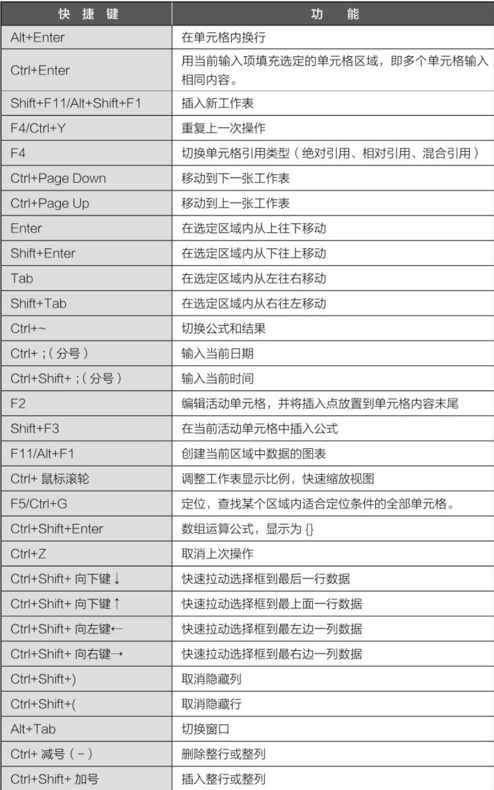
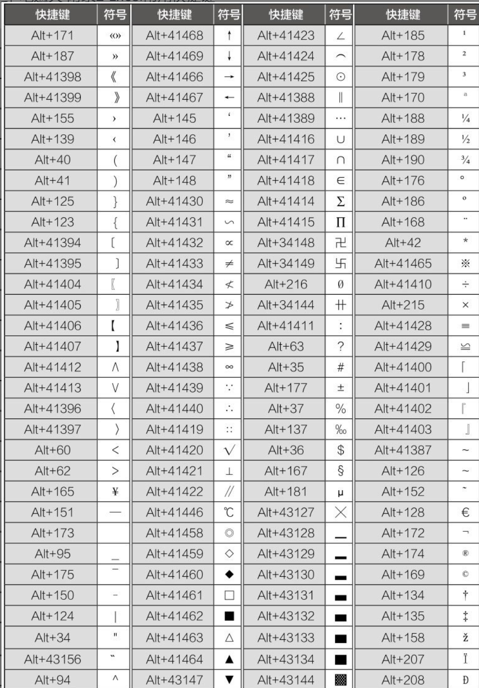
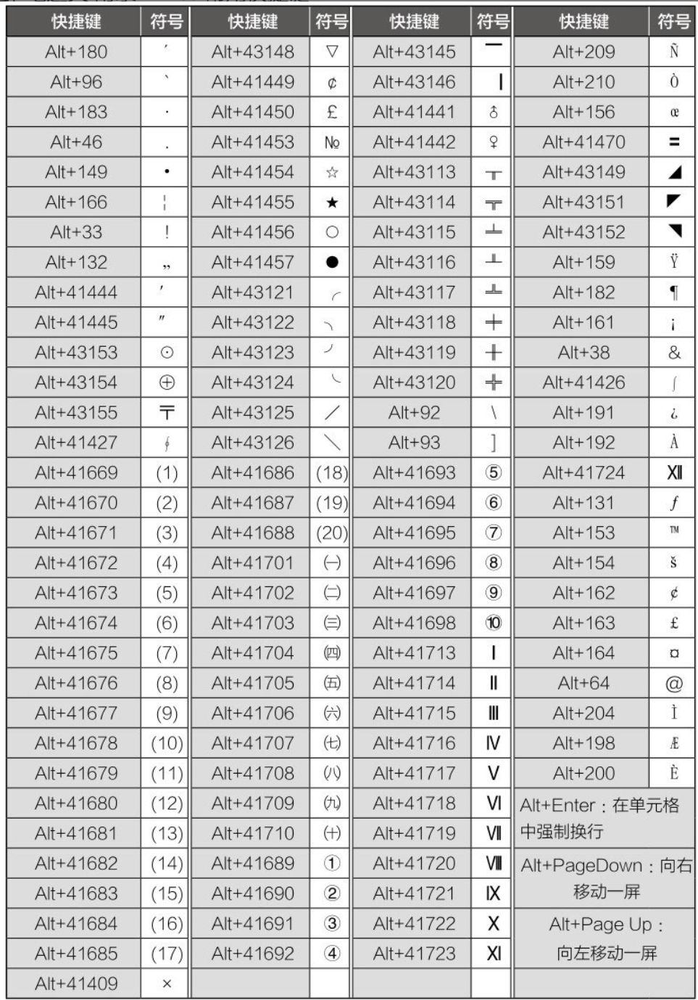
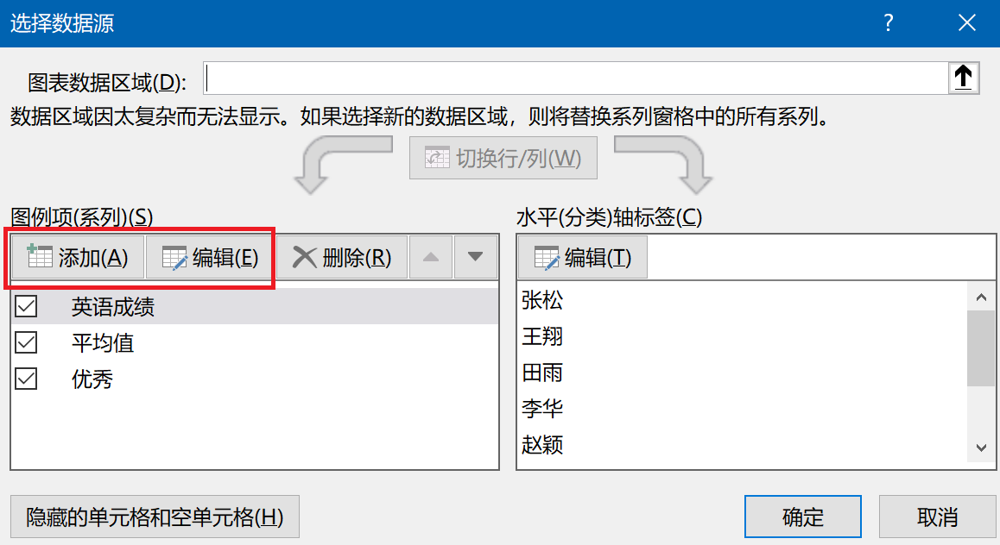
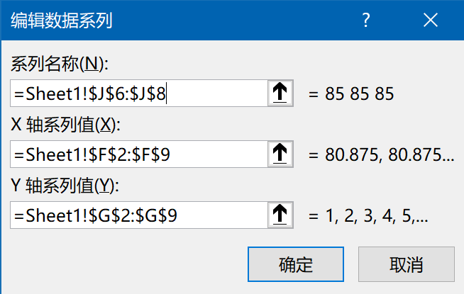

| ShortCut | Function |
|---|---|
| Alt+Enter | 单元格内强制换行 |
| Ctrl+Enter | 批量输入相同内容 |
| Ctrl+Shift+\downarrow | 快速选中以下所有数据行 |
| Ctrl+Shift+\uparrow | 快速选中以上所有数据行 |
| Ctrl+Shift+\rightarrow | 快速选中右侧所有数据列 |
| Ctrl+Shift+\leftarrow | 快速选中左侧所有数据列 |
| Ctrl+Shift+\downarrow + Ctrl+Shift+\rightarrow | 快速选中右下所有数据 |
| F4 | 在此单元格重复上一个操作/改变引用方式(绝对/混合/相对) |
| F5 | 快速定位(如填充区域空格为0) |
| Ctrl+; | 当前日期 |
| Ctrl+Shift; | 当前时间 |
| Ctrl+~ | 公式/结果切换 |
| 数值前加单引号’ | 文本显示 |
| 数值前加单引号“0” | 方式分数变日期 |
| Alt+= | 批量求和 |
| 按住Ctrl | 数据多选 |



:Table. ShortCuts for Excel
| 公式 | 说明 |
|---|---|
| =15*3+20*2 | 包含常呈运算的公式 |
| =A1*3+$A$2*2 | 包含单元格引用的公式 |
| =SUM(A1*3,$A$2*2) | 包含函数的公式二单价 |
| =SUM(A1:A15) | 数组求和 |
| 单价*数量 | 包含名称的公式 |
| {=A1:A10+B1:B20} | 包含数组运算的公式 |
| 变量 | 含义 |
|---|---|
| A1 | 相对引用，行列可变 |
| $A$1 | 绝对引用，行列不变 |
| A$1 | 混合引用，列变行不变 |
| $A1 | 混合引用，行变列不变 |
| Function(MS16) | Description | Tips |
|---|---|---|
| COUNT(number1,number2…) | 只计数 | 文本、逻辑值、错误信息、空单元格都不统计 |
| COUNTA(data1,data2…) | 统计非空单元格 | 只要单元格有内容，就会被统计，包括有些看不见的字符 |
| MAX(number1,number2…) | 求最大值 | |
| MIN(number1,number2…) | 求最小值 | |
| LARGE(array,k) | 第k最大值 | |
| SMALL(array,k) | 第k最小值 | |
| INT(number) | 向下取整 | |
| ROUND(number,k) | 根据小数点后k位四舍五入 | |
| ROUND(number,k) | 根据小数点后k位向上舍入 | |
| ROUNDDOWN(number,k) | 根据小数点后k位向下舍入 | |
| ABS(number) | 绝对值 | |
| FREQUENCY(Data-array,Bins-array) | 频数分布函数 | Ctrl+Shift+Enter |
| MODE.SNGL(number1,number2…),MODE.MULT(number1,number2…)(MS16)/MODE(number1,number2…)(WPS) | 数值型数据的众数(数值或数列) | M_o |
| MEDIAN(number1,number2…) | 数值型数据的中位数 | M_e=x_(\frac{n+1}{2})\ or \ \frac{1}{2}\{x_{(\frac{n}{2})}+x_{(\frac{n}{2}+1)}\} |
| QUARTILE.INC(array,k),QUARTILE.EXC(array,k)(MS16)/QUARTILE(array,quart),quat\sim 0-4(WPS) | 数值型数据的四分数 | Q_L=\frac{n+3}{4},Q_U=\frac{3n+1}{4} |
| AVERAGE(number1,number2…) | 数值型数据的算数平均数 | \bar{x}=\frac{\sum\limits_{i=1}^n x_i}{n},如果单元格为空，求平均值不包含空值 |
| GEOMEAN(number1,number2…) | 数值型数据的几何平均数 | G=\sqrt[n]{\prod\limits_{i=1}^n x_i} |
| PRODUCT(number1,number2…)或 PRODUCT(number1,number2^(-1),…) | 数值型数据的数值连乘 | =\prod\limits_{i=1}^n x_i |
| AVEDEV(number1,number2…) | 数值型数据的平均差 | M_d=\frac{\sum\limits_{i=1}^n |x_i-\bar{x}|}{n} |
| STDEV.S(number1,number2…)(MS16)/STDEV(number1,number2…)(WPS) | 数值型数据的标准差 | M_d=\sqrt{\frac{\sum\limits_{i=1}^n (x_i-\bar{x})^2}{n}} |
| RANK.AVG(number,array,order),RANK.EQ(number,array,order)(MS16)/RANK(number,array,order)(WPS) | 求排序 | order=0,降序; \ne0升序 |
| EXACT(A1,B1) | 判断字符串是否相同 | |
| A1&A2&“C” | 字符串拼接 | |
| SUBSTITUTE(text,oId_text,new_text,[instance_num]) | 文本替换 | |
| RepIace(oId_text,start_num,num_chars,new_text) | 文本字符串指定次数的替换 | |
| MATCH(number,array) | number匹配array的第几个数 | |
| INDEX(number,array) | number匹配array的数值 |
| 函数 | 功能 |
|---|---|
| len(B2,6) | 返回文本串中的字符数。不论中英文字符都按1计数 |
| lenb(B2,6) | 返回文本串中的字节数。汉字丶全角状态下的标点符号，每个字符按2计数,数字和半角状态下的标点符号按1计数。 |
| left(B2,6) | 根据指定的字符数返回文本中的第一个或前几个字符 |
| leftb(B2,6) | 根据指定的字符数返回文本中的第一个或前几个字节 |
| riht(B2,6) | 根据指定的字符数返回文本中的最后一个或多个字符 |
| righb(B2,6) | 根据指定的字符数返回文本中的最后一个或多个字 |
| mid(B2,3,6) | 返回文本串中从指定位置开始的特定数目的字符 |
| midb(B2,3,6) | 返回文本串中从指定位置开始的特定数目的字节 |
 